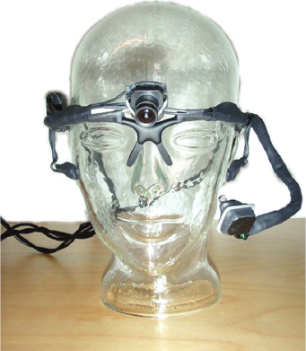
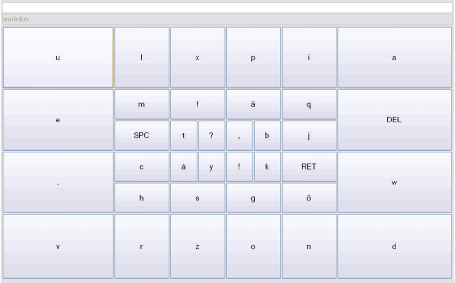
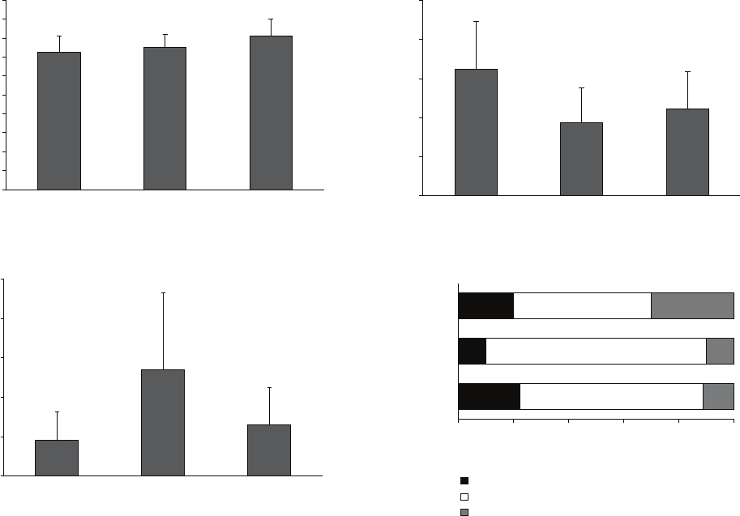
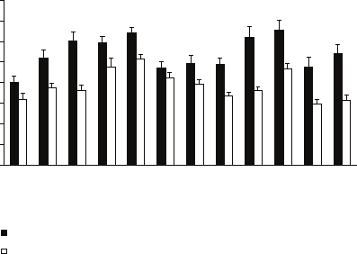
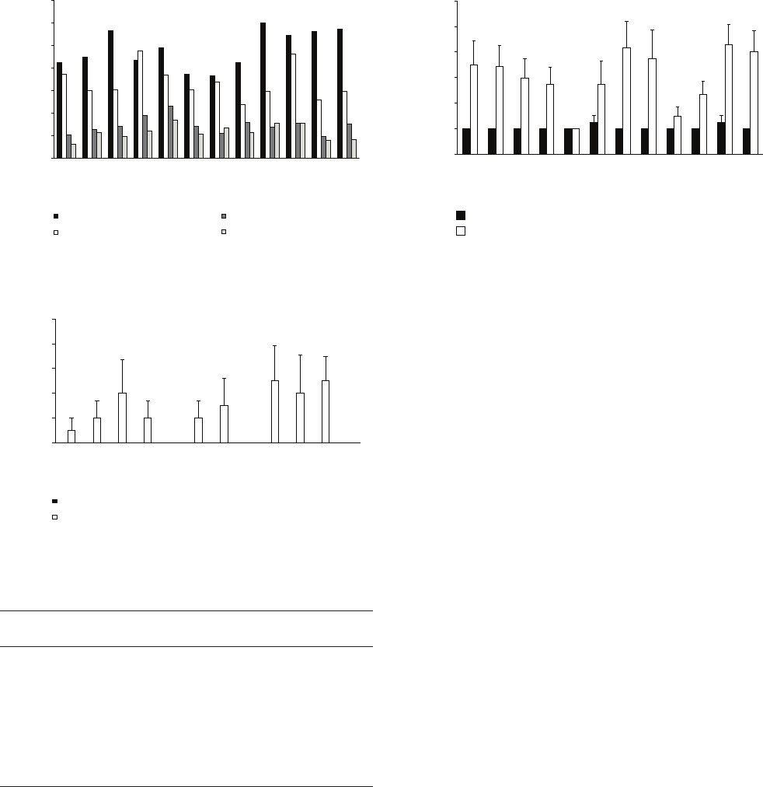
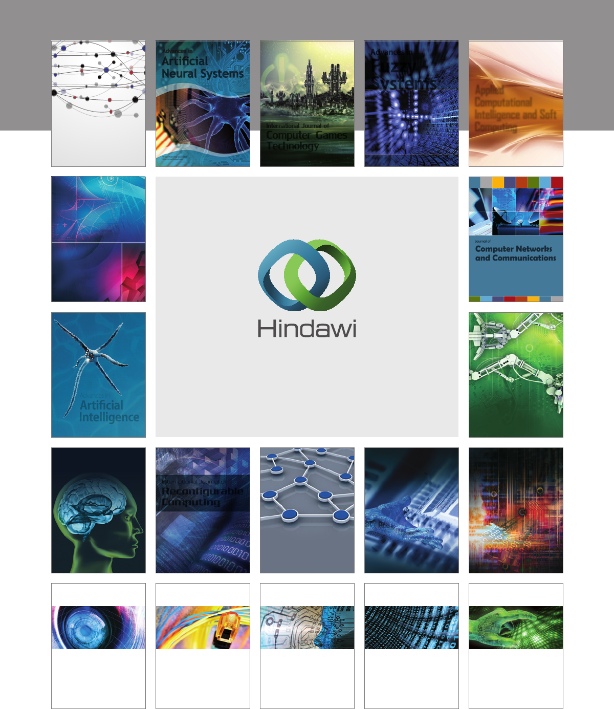

Hindawi Publishing Corporation
Advances in Human-Computer Interaction
Volume , Article ID , pages
http://dx.doi.org/.//
Research Article
Text Entry by Gazing and Smiling
Outi Tuisku,
1
Veikko Surakka,
1
Ville Rantanen,
2
Toni Vanhala,
1,3
and Jukka Lekkala
2
1
Research Group for Emotions, Sociality, and Computing, Tampere Unit for Computer-Human Interaction (TAUCHI), School of
Information Sciences, University of Tampere, Kanslerinrinne 1, 33014 Tampere, Finland
2
Sensor Technology and Biomeasurements, Department of Automation Science and Engineering, Tampere University of Technology,
P.O. Box 692, 33101 Tampere, Finland
3
ICT for Health, VTT Technical Research Centre of Finland, Tekniikankatu 1, P.O. Box 1300, 33101 Tampere, Finland
Correspondence should be addressed to Outi Tuisku; outi.tuisku@sis.uta.
Received November ; Accepted February
Academic Editor: Kerstin S. Eklundh
Copyright © Outi Tuisku et al. is is an open access article distributed under the Creative Commons Attribution License,
which permits unrestricted use, distribution, and reproduction in any medium, provided the original work is properly cited.
Face Interface is a wearable prototype that combines the use of voluntary gaze direction and facial activations, for pointing and
selecting objects on a computer screen, respectively. e aim was to investigate the functionality of the prototype for entering text.
First, three on-screen keyboard layout designs were developed and tested (=10)tondalayoutthatwouldbemoresuitable
for text entry with the prototype than traditional QWERTY layout. e task was to enter one word ten times with each of the
layouts by pointing letters with gaze and select them by smiling. Subjective ratings showed that a layout with large keys on the edge
and small keys near the center of the keyboard was rated as the most enjoyable, clearest, and most functional. Second, using this
layout, the aim of the second experiment (=12) was to compare entering text with Face Interface to entering text with mouse.
e results showed that text entry rate for Face Interface was characters per minute (cpm) and cpm for the mouse. For Face
Interface, keystrokes per character (KSPC) value was . and minimum string distance (MSD) error rate was .. ese values
compare especially well with other similar techniques.
1. Introduction
Recently, there have been several attempts to develop alterna-
tive human-computer interaction (HCI) methods that utilize
eye tracking in combination with another human behavior
related measurement. One line of investigation has been to
measure signals that originate from human facial expression
systems [–]. One reason for using facial muscle behavior
in HCI has been the fact that the human facial system is
versatilewhenusedforcommunicationpurposesandwhose
functionality could serve as a potential solution in HCI
systems as well []. Pointing and selecting as well as text
entry are the most common tasks in HCI, and thus being
able to carry them out with acceptable performance can be
considered important in order to consider an HCI solution
t for use.
e potential of the human facial system has been already
utilized in the context of eye tracking research. For example,
eyeblinkshavebeenusedforselectingobjectswhengaze
direction has been used for pointing [, ]. e choice of
using use eye blinks results from the fact that video-based
eye trackers that image the eyes are able to recognize whether
the eyes are opened or closed [, ]. e relation to the
facial muscle system comes from the fact that eye blinks
result from the activation of orbicularis oculi facial muscle
[]. While video-based eye trackers track the eyes, computer
vision methods can be used to track the eyelids directly [].
Eye blinks which are used for selection purposes could be
mistaken for unintentional eye closure, which in turn can
cause unwarranted selection incidents.
euseoffacialactionsotherthanblinkingcanoer
more functional solutions in combination with gaze pointing.
OtherfacialmusclesthatcanbeusedinHCIare,for
example, corrugator supercilii (i.e., activated when frowning)
or zygomaticus major (i.e., activated when smiling). In ,
a real time HCI method was introduced where voluntary gaze
direction was used for pointing and voluntarily produced
facial muscle activations were used for object selection [].
Advances in Human-Computer Interaction
Remoteeyetrackerwasusedtorecordthegazedirection
andfacialelectromyography(EMG)wasusedtomeasure
frowningrelatedfacialmuscleactivations.Anoverallmean
pointing and selection task time of . seconds was reporter
using a relatively simple experimental setup []. In com-
parison to the computer mouse, the results showed that as
measured with pointing task times, use of the mouse proved
signicantly faster than the new technique in the shortest
pointing distance. However, with medium and long distances,
there were no statistically signicant dierences between the
mouse and the new technique. In a follow-up study, the
technique was extended so that two EMG channels (i.e.,
frowningandsmilingrelatedelectricalactivity)couldbeused
with gaze direction and to then determine which of the two
would function better as a selection technique []. Findings
revealed that smiling functioned faster than frowning; overall
mean pointing task times were . seconds and . seconds
for smiling and frowning, respectively.
San Agustin et al. [] compared the use of two point-
ing techniques and two selection techniques. ese were the
mouse and the gaze for pointing and the mouse click and
voluntarily produced changes in facial EMG (i.e., frowning or
jaw clenching) for selecting objects. ey tested all the four
possible pointing and selection combinations with simple
tasks. Results showed that the overall mean task time was .
seconds. Gaze combined with facial EMG was the fastest one
of the pointing and selection combinations with the task time
of approximately . seconds. Chin et al. []usedfacialEMG
for correcting the inaccuracy of the eye tracker as well as for
selecting objects. If the cursor was not inside the object when
the user gazed at the object, facial muscle activations were
used to move the cursor on the object. For example, le and
right jaws clench resulted in the cursor to move le and right,
respectively. Finally, user selected the target by clenching the
whole jaw. is technique resulted in a mean task time of
. seconds. ese ndings show that combination of gaze
direction and facial activity measurement can function very
well and eectively for pointing and selecting in HCI. is
depends, of course, on the test setup and activations required
for facial behavior.
Recently, further studies in developing the technique
that combines the use of voluntary gaze direction and facial
muscle activations have resulted in a prototype called Face
Interface. It is a wearable device that is built in the frames of
protective glasses and it consists of both a video-based eye
tracker and capacitive sensors for measuring facial activity
[–]. Capacitive sensors measure the movement of facial
tissue instead of the electrical activity of the muscles that the
EMG measures. Capacitive measurement has the advantage
that it requires no contact with the facial skin, and thus,
no preparation of the skin is needed. In addition, it makes
a signicant dierence in respect to the wearability of the
prototype. e aim is that the user just wears the prototype
and starts to interact with computer.
In the rst version of Face Interface, a wired commercial
USB web camera was used for imaging the eye. ere was
no compensation for head movements, and thus, a chin
rest was used for preventing involuntary head movements
[]. In the second version, a scene camera was added to
help in compensating head movements so that it was used
to image the display that was used as a reference for the
head-movement compensation. e prototype was also made
wireless [, ]. In earlier experiments, the functionality of
the prototype has been tested using simple Fitts’ law style
pointing and selecting tasks, so that the task was rst to select
a home square and then to select a target circle using dierent
pointing distances, pointing angles, and sizes of the targets
[, , ]. In the rst experiment, the participants used
frowning as the selection technique. Itwas found that the Face
Interface prototype was functional in pointing and selecting
tasks.eoverallmeanpointingtasktimeof.seconds
was reported []. In the second experiment participants used
either lowering (i.e., frowning) or raising the eyebrows as
theselectiontechnique.eresultsshowedanoverallmean
pointing task time of . seconds by means of frowning and
. seconds by means of raising the eyebrows. Further, an
important nding was that the objects were dicult to point
andselectontheleandrightedgesofthedisplaywhich
suggested a design guideline that objects should be larger on
the edges of the display than in the middle of the display to
make them easier to select []. Both of the above studies
revealed that the larger targets were easier to select than
smaller targets which is similar to other gaze-based or manual
pointing studies [].
Alltheabovenewstudieshavebeendonewithcontrolled
setups that allow calculation of performance metrics using
Fitts’ law analyses [–, , ]. However, little by little testing
new interaction techniques need to be extended to more
applied (i.e., closer to “real world”) tasks. Text entry is such
a task that has been widely studied with systems that use only
gaze input []. In this case, pointing is done by gazing and
selection by various dwell time algorithms. Evidently, text
entry studies ts well to the research of the Face Interface
prototype because it has the same functions (i.e., pointing and
clicking). A more direct route to apply these functions for text
entry is to use an on-screen keyboard.
Most of the on-screen text entry studies with gaze-based
methodshaveusedatraditionalQWERTYlayout.atis
mainly because QWERTY has the advantage that it is familiar
for most users [].BasedonpreviousresearchwithFace
Interface,however,itisclearthataQWERTYlayoutkeyboard
with equally sized buttons would not be optimally functional
[]. is is due to the fact that accuracy of eye tracking varies
depending on gaze direction, and gazing with the eye closer
to the extremities of its rotational range makes the tracking
less accurate. is is because the eye tracking camera is oen
placed in front of the eye and gaze is more precisely tracked
basedonfeaturesontheeye(e.g.,pupil)whenthegazeis
straight towards the camera and the features thus cover more
of the image. Also, near the extremities of eye’s rotational
range the eyelid may occlude part of the pupil making eye
tracking less accurate than when the pupil is fully visible
[]. As stated, earlier results showed that pointing was more
accurate in the middle of the computer display than at the
edges of the screen. is made the target selection at the
edges of the screen dicult if the targets were same sized all
over the display. In the case of QWERTY on-screen keyboard
arrangement, for example, some frequently used letters are
Advances in Human-Computer Interaction
situatedontheedgesofthekeyboard(e.g.,letter“a”issituated
in the le side of the layout) which makes them dicult to
pointand select[]. us, dierent types of keyboard layouts
are needed to create a better functionality for the Face
Interface prototype. An encouraging rst result that writing
speed could be faster with dierent keyboard arrangement
comes, for example, in a study by
ˇ
Spakov and Majaranta [].
ey designed an optimized keyboard arrangement for on-
screen keyboard. Most frequently used letters were placed
in the topmost row of the keyboard in order to make them
easy and fast to select. eir results showed that the mean
writing speeds were . wpm for QWERTY and . wpm
for the optimized letter placement. Similar results have also
been found in dierent text entry studies [, ]. In addition
to Face Interface, there are also other wearable eye trackers
whereaneyecamerahasbeenplacedinfrontoftheuser’seye
and they could benet from new kind of on-screen keyboard
layout as well [, ]. Also high-end remote eye trackers
could benet from a new kind of layout for an on-screen
keyboard [].
In most eye typing studies, the layout design (e.g., key
size and placement) of the keyboard has not been explicitly
considered. GazeTalk is one exception [–]. e GazeTalk
consisted of cells, including a text eld and buttons. e
size of the buttons was approximately cm × cm and the
size of the text eld was cm × cm.Inthetenbuttons,
six letters were visible at a time, as well as space, backspace,
possibility to select letters from alphabet listing, and eight
most likely words. e six visible letters changed aer every
typed character based on a predictive algorithm, so that if
user had typed, for example, “ca”, the visible letters that would
be predicted as the most probable letters are, for example, t,
r, n, u, l, and b. e eight most probable words dynamically
changed during typing, similarly as did the six letters. If
the visible letters were not what a user wished to type, the
next character had to be selected from the alphabet listing.
ebuttonswereselectedusingadwelltimealgorithm.In
a longitudinal study with the GazeTalk, the maximum text
entry speed for Danish and Japanese text, aer thousand
typed sentences, was approximately . words per minute
(wpm) and . cpm, respectively.
Dasher is one alternative for text entry that uses only one
modality (e.g., mouse or gaze) []. It is a zooming interface
which user operates with continuous pointing gestures. At
rst, the letters are placed in the alphabetical order in a
column in the right-hand side of the screen. User should
then move the cursor to the place where the desired letter
is, for example, by looking at the letter. e area where the
desired letter starts to grow and most probable next letters will
come closer to the current cursor position. Letter is selected
when it crosses a horizontal line in the center of the screen.
User should navigate through the letters simply by looking at
them. At rst glance, the letters may seem to be unorganized
because the sizing of the letters is dierent based on the
probability of the next character so that the more probable
the next character the larger its size is. is is the problem
thatmayarisewhenusingDasherforthersttimeandsome
people may not understand the logic of Dasher even with long
practice. Aer two and half hours of practice with Dasher,
users were able to write text at an approximate rate of wpm.
Aer the rst -minute session, the average writing speed
was approximately . wpm [].
As stated above, the keyboard layouts have not been
explicitly studied. In most cases, the layout was just pre-
designed and then an experiment was run to test the typing
speed that could be achieved with it. It is possible that
keyboard layout design can be an important factor especially
with new alternative interaction techniques. It should be
noted that the subjective experiences of the keyboard layout
couldbeamoreimportantfactorthanthewritingspeed
when deciding which keyboard layout to use because the
user might not realize while writing which layout is faster in
terms of writing speed. us, it is important to compare the
possible layouts with each other in one fair method where the
places of the letters would not interfere with the evaluation
of the layout. It has been common to compare new pointing
devices to computer mouse [, ]. However, users have a very
long experience with mouse pointing, and this makes the
comparison of new techniques to mouse somewhat unfair
because it is the case that the mouse is very likely to be better
than any new techniques. Further, usually it has been the case
that the words to be written have been randomized while the
letter placement of the keyboard has stayed static [, ]. is
type of randomization is to certify partly the quality of exper-
imental arrangement and to rule out possible biases resulting
from, for example, the use of same order of the words to be
written. is does not, however, change the fact when people
have used some interaction technique like mouse for over
some years the comparison with a new interaction technique
will always result in favor of the older technique. When
comparing new interaction techniques to traditional ones,
the use of randomization could be considered to balance out
the advantage the use of traditional pointing device in most
cases has. So, randomizing the places of the letters in the
keyboard could result in a more fair comparison between
a new technique and a traditional one. e randomization
canhelpinbalancingoutthehugeadvantagethemousehas
over new interaction techniques. Further, randomization can
be also a suitable method when comparing dierent input
devices with each other because the places of letters that are
learned with one pointing device do not provide advantage to
the next condition where another device is used. In terms of
text entry rate, it was shown already in the s that random
placing of letters do not have an eect on the writing speed, if
the random letter arrangement is compared to alphabetically
arranged letters [].
When testing new techniques, objective measures of
functionality are imperative. However, it is equally important
to measure how the participants rate (i.e., experience) the
functionality of these new techniques. ere are several pos-
sibilitiestomeasuresubjectiveratingsofthetechniques.One
possibility is to use the semantic dierential method which
is a combination of associational and scaling procedures [,
]. With this method participants can rate their experiences
using a set of bipolar scales that can vary, for example, from
bad to good or from boring to fun. Ratings along these
scales can be done by self-assessment manikin (SAM) or

Advances in Human-Computer Interaction
a modication of it. In HCI studies, these types of scales
have been frequently used to analyze experiences about new
interaction techniques [, , , ].
Using bipolar rating scales, Surakka et al. []reportedthat
the use of their technique was rated as faster than the use of
themouse.Ontheotherhand,mousewasratedaseasierand
more accurate to use. San Agustin et al. []reportedsimilar
ndings as their participants rated the combined technique
as faster but less accurate to use than the mouse pointing.
Recently, the participants rated the usage of the Face Interface
prototype as enjoyable, easy, fast, ecient, and accurate [].
When comparing the use of dierent facial activations as
theselectiontechniquewithbipolarratingscales,thestudies
have found no dierence in ratings between frowning and
smiling [], and frowning and raising eyebrows []. In order
to deepen the systematically collected ratings, also interviews
canbedonetogetadditionalinformation[].
To summarize, so far the research on Face Interface has
been concentrated on simple pointing and selection tasks to
testthefunctionalityoftheprototype.enaturalcontinu-
ation would then be to extend the task with Face Interface
to on-screen text entry. e previous research with Face
Interfaceshowedthattherearesomepartsonthewidescreen
display that were dicult to point and select []. To reme-
diate this, three dierent keyboard layouts were designed
and tested. ey were all designed so that the sizes of the
keyswerelargerintheedgesofthekeyboardthaninthe
middle of the keyboard. Another feature that was used was
the randomization of letters each time a word was entered to
balanceouttheadvantagemouseinteractionhasoverallnew
interaction methods.
Two experiments were run to investigate the keyboard
layout and to compare writing with Face Interface to writing
with the mouse. e aim in the rst experiment (i.e., layout
selection experiment) was to compare three dierent on-
screen keyboard layouts, so that it would be equally easy to
select any character from the keyboard. e three designed
layouts were then pilot tested with ten participants to see
which of the layouts would be most promising to be used in
the future. Aer the experiment, participants rated the used
keyboard layouts and a short interview was conducted. In
the second experiment (i.e., text entry experiment) the aim
was to compare entering text with Face Interface to entering
text with computer mouse. e on-screen keyboard layout
thatwasselectedasthemostprominenttobeusedwith
Face Interface in the rst experiment and was used in the
second experiment. In both of the experiments, the task of
the participants was to enter one word at a time, and aer the
experiment participants rated their experiences on six bipolar
scales and were shortly interviewed.
2. Face Interface
Face Interface is an eye-glass like wireless wearable device
that combines the use of wearable video-based eye tracker
and a capacitive sensor to detect the movement of facial skin
resulting from the activation of facial muscles. e third
generation Face Interface device is shown in Figure .
F : e Face Interface prototype.
e prototype device was built on the frames of protective
glasses. e head-worn device includes two cameras, one for
imaging the eye and the other for imaging the computer
screen, an infrared (IR) light emitting diode for illuminating
theeyeandtoprovidethecornealreection,sensorsand
electronics for detecting facial movements using a capacitive
method, and a Class Bluetooth radio (RN- by Roving
Networks) for serial transmission of the measured capaci-
tance signal. e used cameras were low-cost, commercial
complementary metal oxide semiconductor (CMOS) cam-
eras. e eye camera was a greyscale camera with a resolution
of × pixels that was modied to image IR wavelengths,
and the scene camera was a color camera with a resolution
of × pixels.eframerateforbothofthecameras
was frames per second. e eye camera is placed near
the user’s le eye and the IR light source was placed right
next to it. e scene camera was placed in front of the user’s
forehead [, ]. e facial movement sensors are based on
capacitance measurement with a programmable controller
for capacitance touch sensors (AD by Analog Devices).
e capacitive sensors in the frames were placed in front of
both eyebrows and cheeks, and one was placed in front of the
forehead.
In addition to the head-worn device, a separate carry-on
unit to house some components responsible for the wireless
operation was included. e unit included a power supply,
four AA batteries, and two wireless analogue video transmit-
ters that used the common free frequencies at . GHz. e
PC computer was connected to a receiving station consisting
of two video receivers with a power supply, and two frame
grabbersforthevideosignals.ecapacitivesignalwas
received with computer’s Bluetooth functionality.
Computer vision library OpenCV version . []was
utilized to extract features from the image streams of both
eye and scene cameras. Pupil detection was based on the
corneal reection method. e algorithm that was used for
pupil detection and corneal reection detection was the same

Advances in Human-Computer Interaction
that Rantanen et al. []introduced.Calibrationoftheeye
tracker was done in a similar manner as in the OpenEyes
project []. Head movements in relation to the computer
screen were compensated using a computer vision algorithm.
e screen detection algorithm aimed to nd the frames
of a dark rimmed computer display from the scene camera
image and, thus, no separate markers (e.g., colored dots on
the borders to be detected) were needed. e algorithm was
based on three observations. First, there were one or two
highly contrasted edges that separated the display surface
from the surrounding background. e screen is typically
brightly illuminated and thus lighter than the surroundings.
Further, many monitors have a black frame that surrounds
the display surface. us, there is a sharp contrast between the
illuminationofthedisplaysurfaceandthesurroundingspace
(e.g., monitor frame or background), and there may also be
another edge with high contrast between the dark monitor
edge and the background. Second, both the display surface
and the monitor frame are typically rectangular, which means
that they have four straight corners. ird, the corners of the
outer border of the monitor frame are relatively close to the
corners of the display surface. ese three features were used
to rank potential screen candidates to select a best one [].
For example, a candidate with a dark rimmed border was
preferred to one without.
Previously, with Face Interface, only frowning and raising
theeyebrowshavebeenusedastheselectiontechnique[–
]. Earlier by using facial EMG, Surakka et al. []had
compared the use of frowning and smiling as the selection
technique and found out that the smiling was a faster selec-
tiontechniquethanfrowningwhenvoluntarygazedirection
wasusedasthepointingtechnique.Further,Rantanenetal.
[] found that smiling as the selection technique does not
interferewiththeaccuracyoftheeyetracker.Onthebasis
of these ndings, Face Interface was updated so that smiling
activity can be tracked with capacitive sensors.
3. Layout Selection Experiment
3.1. Methods
3.1.1. Participants. Ten ( male, female) able-bodied vol-
unteers participated in the experiment. eir mean age was
. years (range – years). All of them had normal or
corrected-to-normal (i.e., with contact lenses) vision. All
were native Finnish speakers. To avoid any bias, participants
hadnoknowledgeofthedesignofthelayouts.
3.1.2. Apparatus. e Face Interface prototype was used as
the pointing and selection device. A 24
widescreen display
was used and the viewing distance was approximately cm.
A computer with Windows XP operating system was used
to run the experiment. e soware for online processing of
the data from the prototype was implemented with Microso
Visual C++ []. e soware translated the obtained
information to cursor movements and selections on the
computer screen.
F : Layout .
F : Layout .
ree dierent keyboard layouts were designed (see
Figures –). Each of them consisted of keys, although,
the keys were laid out dierently. In every keyboard RET,
key represented the Enter key, SPC key represented the space
key, and DEL key represents the delete key. In Layout (see
Figure ), the keys in the middle of the screen were made
smallerbecauseearlierresearchhasshownthatitiseasierto
selectsmallerkeysinthemiddleofthescreenthanonthe
edges of the screen. In Layout (see Figure ), keys only on
theedgesofthekeyboardweremadelargerandsmallerkeys
wereusedthemiddleofthekeyboard.Finally,inLayout
(see Figure ), the sizes of the keys were gradually increasing
from the middle of the keyboard to the edges of the keyboard.
Keyboards were implemented in .NET environment using
Visual Basic programming language.
e keyboard layouts (i.e., button placement) were kept
static but the places of the letters were randomized every time
the participant had entered the requested word and pressed
the Enter key. is approach was chosen in order to prevent
thepossiblelearningeectsofthekeyboardlayout.Keys
were highlighted when the participant’s gaze was inside a key.
When participant had pressed the key, a “click” sound was
played to indicate the selection. Cursor was not visible. e
characters that the user typed appeared in the white text box
at the top of the keyboard. e grey text box under it showed
thewordtobewritten.

Advances in Human-Computer Interaction
F : Layout .
3.1.3. Experimental Task. e task was to write one word
(as in other studies [, ]) “aurinko” (i.e., sun in English)
ten times with each of the three keyboard layouts. e word
“aurinko”waschosenfromthelistofmostcommon
Finnish words and it was chosen because of three reasons:
() it was a quite long word compared to other common ones
such as “ei” (no in English) or “silm
¨
a” (eye), () because it was
a noun, and () because each of the characters appeared only
once.
e users entered characters by looking at the desired
character and smiled in order to select the character. When
participants had entered the word “aurinko” once, she or
hewasinstructedtopresstheEnterkey(i.e.,thekeythat
hadlabel“RET”onit).Aertheparticipanthadhitthe
Enter key, the places of the letters were randomized, and
participant was required to look the letters needed to write
word “aurinko” again. is procedure was repeated until the
participant had written the word ten times. Aer that, the
keyboard disappeared. In total, one participant wrote the
word “aurinko” times in total, ten times with each of the
keyboard layouts.
3.1.4. Procedure. When a participant arrived in the labora-
tory, the laboratory and the equipment were introduced to
him or her. e participant was asked to sign an informed
consent form. e participant was told that the purpose of
the experiment was to evaluate three dierent layouts of
on-screen keyboards using gaze direction as the pointing
technique and smiling as the selection technique. en, the
prototype was introduced to the participant. e participant
wore the prototype and saw live videos from the eye camera
andfromthescenecamera.Sheorhewasinstructedtotry
dierentheadorientationstoseehowlargeheadmovements
were possible while still keeping the display visible in the
scene camera image. Next, the participant was instructed to
try and perform clicks by smiling. Aer a few successful clicks
were produced, the eye tracker was calibrated.
Before conducting the experiment, there was a practice
session consisting of trials which were precluded from
the actual experiment. In the practice session a keyboard
with same equal sized keys was used and participants wrote
theword“elokuva”(i.e.,movieinEnglish)vetimes.e
participants were told to perform the tasks as fast and as
accurate as possible. en, there was a short relaxation period
before the actual experiment. en the eye tracker was
calibrated and the actual experiment started. e order of the
used keyboard layouts was counterbalanced. e eye tracker
was re-calibrated during the experiment when needed (i.e.,
approximately . times per participant on average). Aer the
participant had completed the task with one keyboard layout,
sheorhewasallowedtorestforawhile,ifnecessary.
At the end of the experiment, participant rated the key-
board layout that was used on three dierent scales: enjoy-
ableness, clarity, and functionality. For the enjoyableness and
clarity ratings, they saw the pictures of each of the keyboard
layouts lined up in the computer screen in a randomized
order. ey were asked to select the layout that was most
enjoyable and most clear out of the three layouts. If they could
not decide, they were allowed to select the “I don’t know”
option. e order of enjoyableness and clarity ratings were
counterbalanced. For the functionality ratings, participants
were allowed to interact with each of the keyboards as long
astheywishedandtheywereallowedtowriteanything
they liked. Aer trying out every layout, they were asked
which of the three layouts were the most functional in their
opinion. Short (semistructured) interview was conducted
aer participants had rated the layouts in the three specied
scales. Completing the whole experiment took approximately
an hour per participant.
3.1.5. Metrics. Text entry rate was measured in cpm. e
measureofcpmwaschoseninsteadoftheoenusedwpm
measure because only one word at a time was to be written.
Similar approach was also chosen by Helmert et al. []. Error
ratesweremeasuredintwodierentways:theminimum
string distance (MSD) error rate and keystrokes per character
(KSPC). e MSD error rate was measured with the improved
MSDerrorratesassuggestedbySoukoreandMacKenzie
[]. MSD error rate is calculated by comparing the tran-
scribed text (i.e., the text that was written by the participant)
with the presented text, using minimum string distance.
e key strokes per character (KSPC) value indicates how
oen the participants cancelled characters []. In a best case
scenario KSPC = ., which indicates that each key press has
produced a correct character. However, if a participant makes
a correction during text entry (i.e., presses Delete key and
chooses another letter), the value of KSPC is larger than one.
us, KSPC measures the accuracy of the text input process.
Note that MSD error rate only compares the transcribed text
to the presented text, whereas KSPC takes into account the
errors produced.
3.2. Results. Data for statistical analyses were extracted from
the moment of entering the rst character to the selection of
Enter character at the end of the word.
3.2.1. Text Entry Rate. Text entry rate for each of the on-
screen keyboard layouts is presented in Figure .eoverall
mean text entry rate ± standard error of the means (S.E.M.s.)
for Layout was . ± . cpm, . ± . cpm for Layout ,

Advances in Human-Computer Interaction
0
2
4
6
8
10
12
14
16
18
20
Layout 1 Layout 2 Layout 3
Text entry rate (cpm)
F : Text entry rate by cpm.
Layout 1 Layout 2 Layout 3
MSD error rate
0.5
0.4
0.3
0.2
0.1
0
F : MSD error rate.
and . ±. cpm for Layout . A one-way repeated measures
analysis of variance (ANOVA) did not reveal a statistically
signicant eect of the layout.
3.2.2. Error Rates. MSD error rates by the layout and task
number are presented in Figure .eoverallmeanforMSD
error rate ±S.E.M was . ± . for Layout , . ±. for
Layout , and . ± . for Layout . A one-way ANOVA
did not reveal a statistically signicant eect of the layout.
KSCP values by the layout and task number are presented
in Figure .eoverallmeanforKSPC±S.E.M. was . ±.
forLayout,.±.forLayout,and.±. for Layout
.Aone-wayANOVAshowedastatisticallysignicanteect
of the layout F(, ) = ., P < .. e post hoc pairwise
comparisons were not statistically signicant. Based on the
results shown in Figure , it seemed, however, that the Layout
was the most promising in terms of eectiveness.
3.2.3. Subjective Ratings. eresultsoftheratingsofthe
layouts can be seen in Figure .FromtheFigure ,itis
clear that the participants clearly preferred Layout . One
participant considered the layouts equally enjoyable.
Overall, participants liked to use the Face Interface
technique for text input. Aer the experiment they gave
spontaneous comments such as “this was cool” or “that
was fun.” One participant commented that the technique
feels natural to use and other participant commented that
Layout 1 Layout 2 Layout 3
Accuracy (KSPC)
1.5
1.4
1.3
1.2
1.1
1
F : KSPC values.
Enjoyableness
Clarity
Functionality
Layout 1
Layout 2
Layout 3
0
20 40 60 80 100
Frequency (%)
F : Subjective ratings.
the use of smiling for selections felt fun. One participant
commented that entering text with the prototype felt very
easy. Comments about each of the three keyboard layouts
were mainly positive. About Layout , we got comments such
as “it is easy to see many letters at the same time, because the
keysaresmallerinthemiddle[ofthekeyboard].”iswas
actuallynotedbytwoparticipants.Further,itwascommented
that Layout is nicely geometrically shaped which makes it
enjoyable, and clear. Of Layout , participants gave comments
suchas“thelayoutwasnicetolookat”,aswellasitwassaid
to be “calm”. It was also mentioned that it was easy to seek
the letters from this layout. Further, one participant said that
the equal sizing of the keys in the layout made entering the
text enjoyable. Also, it was mentioned that the text entry felt
to be the fastest with Layout . One participant commented
that with Layout , it was easiest to nd the letters because
of the layout was so pleasant looking. One participant said
that he preferred Layout because it did not contain small
keys, as the other layouts did. It was also noted that from
thislayout,itwaseasiesttoselectthekeys(becauseoftheir
size). Of Layout comments such as “even though it is not
really pretty to look at, nor does it seem to be very clear, it is
still the most functional layout” were given. e participants
motivated their answers by saying that the keys seemed to be
justontherightplace,andthesizingofthekeyswasreally
good. One participant mentioned that it was easy to nd the

Advances in Human-Computer Interaction
lettersfromLayoutbecauseit“directed”one’sgazenaturally
(i.e., because of the sort of a spiral-shaped layout).
Some negative comments were given as well. For example,
Layoutwasfoundtobe“hideous”byoneparticipantand
“awful” by other participant. On Layout , it was mainly
mentioned that it was “fuzzy” and it did not seem to have clear
logic behind how the keys were placed. Layout was actually
theonlylayoutthatreceivedonlypositivecomments.
4. Text Entry Experiment
First experiment indicated that the Layout would be the
most promising one to be used with Face Interface. us,
based on the results of Experiment 1, a second experiment
was run with Layout .
4.1. Methods
4.1.1. Participants. Twelve ( male and female) able-bodied
volunteers participated in the experiment. eir mean age
was years (range –). All the participants had normal
vision.eywerenativeFinnishspeakersandtheywere
novices in using any gaze-based system for controlling
computers and same for using Face Interface. However, they
were pretty experienced users of computer mouse; that is,
their average experience in using mouse was . years (range
–).
4.1.2. Apparatus. e same prototype device was used as
in Experiment 1.ekeyboardthatwasused,wasLayout
selected from Experiment 1 study. Again, the places of
letters changed during the experiment to prevent the possible
advantage that mouse may have if the letter placement is
known (e.g., QWERTY). e mouse that was used was an
optical mouse (Logitech Mouse m). Mouse speed was set
to medium level.
4.1.3. Experimental Task. e experimental task was the same
as in Experiment 1.
4.1.4. Procedure. Whentheparticipantarrivedinthelabo-
ratory, the laboratory and the equipment were introduced to
him/her. e participant signed an informed consent form
before the experiment. e participant was told that the
aim of the experiment was to compare typing with mouse
to the typing with Face Interface prototype using on-screen
keyboard.eorderoftheusedpointingdevicewascoun-
terbalanced so that half of the participants started with Face
Interface and the other half started with the mouse. Partici-
pants performed the experimental task ten times, then there
were a short pause and they performed the experimental
task again ten times. Aer participant had conducted the
experimental task with one pointing device she or he rated
the experience with six nine-point bipolar scales. e scales
were general evaluation (i.e., from bad to good), diculty
(i.e., from dicult to easy), speed (i.e., from slow to fast),
accuracy (i.e., from inaccurate to accurate), enjoyableness
(i.e., from unpleasant to pleasant), and eciency (i.e., from
0
5
10
15
20
25
30
35
40
P1 P2 P3 P4 P5 P6 P7 P8 P9 P10 P11 P12
Text entry rate (cpm)
Participant
Mouse
Face Interface
F : Text entry rate for both pointing devices divided by
participant.
inecient to ecient). e scales varied from −(e.g.,bad
experience) to + (e.g., good experience), and represented
a neutral experience (e.g., not slow nor fast). en the same
procedure was repeated with the other pointing device. Aer
participant had completed the task with both of the pointing
devices, a short interview was completed. Conducting the
whole experiment took approximately minutes.
4.1.5. Metrics. Same metrics were used as in Experiment 1.
4.2. Results
4.2.1. Text Entry Rate. Text entry rate for both pointing
devices by participant is presented in Figure .eoverall
mean text entry rate ± S.E.M.s. for Face Interface was . ±
. cpm and . ±. cpm for the mouse. A one-way ANOVA
for the pointing device showed a statistically signicant eect
of the pointing device F(,)=.,P < .. A one-way
ANOVAforFaceInterfaceshowedastatisticallysignicant
eect of session F(, ) = ., P < ..Forthemouse,the
eect of session was not statistically signicant.
Figure shows minimum and maximum values for
every participant by pointing device. e overall mean maxi-
mumvaluesforFaceInterfacewas.cpmand.cpmfor
mouse.
4.2.2. Error Rates. MSD error rate for both pointing devices
by participant is presented in Figure .eoverallmean
MSD error rate ± S.E.M was . ±. for Face Interface and
± for mouse. A one-way ANOVA for the pointing device
showed a statistically signicant eect of pointing device F(,
) = ., P < .. One-way ANOVAs for the session were
not statistically signicant.
KSPC values for both pointing devices by participant are
presented in Figure .eoverallmeanKSPC± S.E.M was
. ± . for Face Interface and . ± . for mouse. e
one-way ANOVA showed a statistically signicant eect of
pointing device F(, ) = ., P < .. One-way ANOVAs
for session were not statistically signicant.

Advances in Human-Computer Interaction
0
10
20
30
40
50
60
70
P1 P2 P3 P4 P5 P6 P7 P8 P9 P10 P11 P12
Text entry rate (cpm)
Participant
Mouse max
Face Interface max
Mouse min
Face Interface min
F : Maximum and minimum values for mouse and Face
Interface.
0
0.1
0.2
0.3
0.4
0.5
P1
P2
P3
P4 P5 P6
P7
P8 P9 P10
P11
P12
Mouse
Face Interface
Participant
MSD error rate
F : MSD error rate by participant.
T : Mean ranks of ratings of both techniques.
Face
Interface
Mouse
Mann-whitney
Signicance
General
evaluation
.
.
.
n.s.
Diculty .
.
.
P < .
Speed .
.
.
P < .
Accuracy .
.
.
P < .
Eciency .
.
.
n.s.
Enjoyableness .
.
.
n.s.
4.2.3. Subjective Ratings. Mann-Whitney U test was used
for pairwise comparisons because it is commonly used for
comparing two independent samples with each other. Mean
ranks of subjective ratings are presented in Table .
Aer the experiment a short interview was conducted.
First, participants were asked if they could see that the
prototype would be used wider in future. All the participants
answered yes to that question. ey justied their answers by
stating, for example, that the use of the prototype was quite
easy and the prototype was interesting to use. Participants
liked especially the fact that gaze was used for pointing
becauseitwaseasyandevennaturaltouse.eyalso
0.95
1
1.05
1.1
1.15
1.2
1.25
P1 P2 P3 P4 P5 P6 P7 P8 P9 P10 P11 P12
Keystrokes per character (KSPC)
Participant
Mouse
Face Interface
F : KSPC values by participant.
mentioned that the smiling felt natural as the selection
technique but it required some time to get to use to it.
Participants were also asked that in what kind of task
they would think that the Face Interface prototype could be
used in the future. e answers varied between participants.
However, some common points could also be found. Nine
participants out of answered that disabled people could use
this prototype for communicating with other people. ey
saw the prototype as a promising concept for the disabled
people who cannot move their hands. ere were many other
ideas as well. For example, Face Interface could be used as
an alternative for remote control while watching television.
Reasoning for using Face Interface as remote control could be
that people are getting lazy, and thus, in future, even moving
a remote-control with hand may require too much eort and
thus, Face Interface could be a potential solution. It was also
suggestedthatthiskindoftechniquecouldbeusedinpublic
when interacting with large interactive billboards or tourists
could use it when interacting with a map in a strange city. e
map could, for example, show sights that are near the place
that user is looking and user could then select an attraction
thatsheorhewouldliketoknowmore.Onasimilartopic,
a lecturer could use this to emphasis some specic point to
students from the slides. Further, prototype could be used
in a loud spaces, where talking would be impossible, for
example, in a factory. Idea that Face Interface could be used
whiledrivingacaralsocameup.atis,therewouldbea
transparent screen in the windshield and the driver could do
something with it. One task that was mentioned that Face
Interface could be used while playing video games or children
could use it when playing.
On the other hand, there were fewer ideas about where
Face Interface could not be used. Participants suggested that
Face Interface could not be used in tasks that need really
high accuracy or where the result is not shown. One such
task that was mentioned was the use of PIN code in ATM’s.
Overall, participants found more tasks that were suitable for
Face Interface and less that were not. Four of the participants
did not come up with anything where Face Interface could
not be used.
Advances in Human-Computer Interaction
e last interview question was a word association task
which was roughly based on the semantic dierential method
[]. Task was to list words that came to their mind when
using Face Interface. Participants listed many dierent kinds
of words. To the glasses it was linked words such as eye glasses,
sun glasses, gaze, and eye pointer. About the technique that
words such as fasttoabsorb,handy,new,useful,fun,advanced,
science ction, future, modern, interesting, futuristic, challenge,
and 21st century were mentioned. Some negative words were
mentioned as well, such as requires focusing, dicult, and
troublesome.Again,morepositivethannegativecomments
were mentioned.
5. Discussion
e aim of the layout selection experiment was to nd out
which of the three designed keyboard layouts would be the
most promising one to be used with Face Interface and in the
actual typing experiment. Because the statistical analyses did
not reveal signicant dierences in the text entry rate (cpm)
and MSD error rate between the three dierent keyboard
layouts, it suggests that text entry was neither signicantly
faster nor signicantly erroneous with any of the keyboard
layouts. In general, avoiding small keys near the edges of
the screen seems to have successfully compensated for the
previouslyfoundproblemsinselectingobjectsmainlyatthe
corners of the display as well as at the le and right edges
of the display []. With the current keyboard layout designs
that problem was overcome. Subjective ratings showed that
participants preferred the design of Layout . is preference
was supported by the results of KSPC. us, both subjective
andobjectivedataledustochoosetheLayoutforthe
subsequent typing experiment.
e text entry experiment showed that the overall mean
text input speeds with Face Interface and mouse were cpm
andcpm,respectively.eANOVArevealedthatentering
text with the mouse was signicantly faster than entering
text with Face Interface. e slower text entry speed of Face
Interface can be explained with the fact that participants
did not have any previous experience with Face Interface;
they only had a practice of approximately minutes prior to
the experiment. With mouse, however, they had experience
over years on average. us, from this point of view
the found dierence in text entry speed is relatively small.
In addition to the radical dierences in earlier experiences
in using these two interaction methods there can be other
explaining factors. For example, there is evidence that during
eye typing users, especially novices, tend to gaze at the results
of typing which can slow down the typing speed [, ]. Also
therandomizationmighthavehadaneectforthis,because
when eyes are used as both: input and observation method,
it might cause slowness for typing because participant cannot
look for the next character before she/he has typed the current
one. On the other hand, when using mouse (i.e., hand) as
an input method, then eyes are free for searching the next
character while cursor is still on the previous character.
Further, Figure shows minimum and maximum values
for mouse and Face Interface for text entry speed for every
participant. One interesting nding for Face Interface was
that one participant actually had a maximum text entry
speed value of . cpm which was even higher than that
participant’s maximum speed with mouse, that is, . cpm.
On the other hand, it can be seen from the Figure that
theslowestvaluesforFaceInterfaceandmouseareona
similar level. In other studies where text entry with gaze-
basedsolutionshasbeencomparedtomouse,theresultshave
shown, similarly as in the current experiment, that the mouse
has been faster in terms of speed [, ]. For GazeTalk,
for example, the writing speed with mouse was reported to
be approximately . wpm (for Danish text) and cpm (for
Japanese text) [].
We note especially that the comparison between mouse
and Face Interface must be done cautiously because Face
Interface uses two dierent modalities that are not tradi-
tionally (in contrast to hands) used neither for controlling
computers nor manipulating objects. First, eye, for example,
is primarily a perceptual organ []. People move their eyes
involuntarily towards new stimuli which may cause problems
when using eye gaze as the pointing method. It is known
that there are some problems that have an eect when gaze
direction is used for pointing, for example, inaccuracy of
the eye trackers. Second, even if a person thinks that his or
her gaze is xated on a target; his eyes are actually actively
moving []. is movement is known as xation jitter []
and it can cause inaccuracy in eye tracking. ird, it is in
fact a rather new invention to use facial muscle movements
as the selection method [, , ]. Some problems may
occur, for example, from the fact that some people may
nd voluntarily control of facial muscles to be dicult [].
us,fromthefactthattherearesomepossiblediculties
in both techniques, it could be assumed that an integrated
use of voluntary gaze direction and facial muscle movements
for interacting with computers can be challenging at rst.
For example, there may be a delay in selecting the object
whenthecursorisinsideanobjectbecausethepointing
and selection are operated with two dierent modalities. Of
course with such little amount of practice as in the current
study, the smooth combination of these two modalities to a
fast interaction techniques is not possible. Based on the above
discussion, it seems quite natural that error rate with Face
Interface is much higher than error rate with mouse.
Even though this experiment was a dierent from a
traditional text entry experiment in a sense that the aim
was to compare two pointing and selection techniques, some
comparative results to other techniques can be given. Because
text entry rate in most of the other studies have been reported
using wpm value [, , , ], converting values from
cpm to wpm in the current study gives an impression of
the writing speed as compared to other systems. Of course,
converting the cpm to wpm might not be the most reliable
in this case because participants wrote only one word at a
time in the current experiment. However, the wpm values
give the possibility to compare the results to other studies.
Wpm values in the present study were for Face Interface
wpm and wpm for the mouse. It is noteworthy to mention
that, for example, rst time users of Dasher wrote text with
an average speed of . wpm aer the rst session []. In
Advances in Human-Computer Interaction
text entry studies with gaze gestures as the input method, a
bit lower text entry speed has been achieved: approximately
. wpm aer the rst session with EyeWrite []. Further,
Porta and Turina [] reported that their novice participants
wrote one phrase that included characters in . seconds
which corresponds roughly to cpm. For the GazeTalk [],
the grand mean text entry speed was . wpm for Danish
text and . cpm for Japanese text. We note, again, that
comparison to purely gaze based studies can be problematic
because these do not require any other modality integration
for functional user interface. In a dierent multimodal
technique where the object was pointed by gaze and the
selection was made utilizing signals from the brain, the text
entry speed was found to be . cpm [].
Error rate analysis using MSD revealed that participants
made only few errors. is can be seen from the overall mean
MSD error rate of . for Face Interface and . for the
mouse. For the GazeTalk, the MSD error rate was . [],
andfortheDashertheMSDerrorratewasapproximately.
When interacting with on-screen keyboard using dwell time
as the object selection method a MSD value of . has been
reported []. e only possible comparison of the KSPC
results is one with eye typing experiments. at is because
KSPC as the measure is intended for such a text entry systems
in which keys are pressed (i.e., keystrokes are created) which
makes KSPC unsuitable for measuring the performance of,
for example, for Dasher. e overall mean KSPC value for
Face Interface was . and . for mouse. Majaranta et al. []
reported the grand mean for KSPC of . in the rst session
within a longitudinal study which corresponds to this study
because that session lasted approximately similar time period
as the current experiment. Helmert et al. []reportedKSPC
values from . (dwell time of ms) to . (dwell time of
ms) when one word at the time was written. e results of
KSPC are very promising for Face Interface and they compare
very well with other gaze based text entry techniques.
Quite naturally, the re-randomization of the letters aer
each written word had an eect to the text entry speed
because participants had to nd the correct characters time
aer time and the participants could not rely on their
earlier experience about places of the keys as is the case, for
example, in a QWERTY layout. However, the present aim
wastostudyandcomparetwodierentpointingdevices
by specically excluding the eects of letter placement. For
this purpose, letter randomization was necessary. Even with
this arrangement, the text entry speed in the current study
compared well with other studies.
e ratings of the two techniques revealed that partici-
pants rated the use of mouse as more accurate, faster and
easier than the use of Face Interface. In the ratings of general
evaluation, eciency and enjoyableness there were no sta-
tistically signicant dierences between the two techniques.
Inaway,thisisapositivendingbecauseitindicatesthat
participants rated the use of the mouse and the prototype
asequalwiththesethreescales.Currentratingscompare
well with previous studies where similar techniques have
been compared to mouse. For example, Surakka et al. []
reported that participants rated the gaze combined with EMG
technique as faster and less accurate and more dicult to
use than the computer mouse. Further, San Agustin et al.
[] found that their participants rated the gaze pointing
combined with facial EMG as faster but less accurate to
usethanthemousepointing.us,currentratingsare
similar to those reported earlier. Tuisku et al. []reported
ratingsthatwereonthesamelevelasincurrentstudy.An
interesting nding from the interviews was that even though
the participants used the Face Interface prototype only for
short period of time and were novices in using it, they were
still able to name many possibilities in which Face Interface
could possibly be used in future. us, it seems that they were
able to see the potential of Face Interface.
e present results showed that entering text with the
prototype is possible. is experiment revealed also possible
designs for on-screen keyboard layout. Even though the
results showed that mouse was faster in terms of text entry
speed, the results were promising for future text entry with
Face Interface. Present results also conrmed that smiling
can be used as the selection technique with Face Interface
which can oer more possibilities to use it in the future.
at is, the user is able to choose the selection technique
he/shewouldliketousefromthethreepossibleoptions(i.e.,
frowning,smiling,andraisingtheeyebrows).Itisnoteworthy
to mention that for the people who the use of speech is not
possible, interactive conversation is seen as tolerable when
it achieves a minimum rate of wpm []. Face Interface
met these minimum requirements even with the randomized
keyboard. To further improve the technique, next steps would
be to decide the letter placement in the keyboard based on
the used language’s most common characters and to run
a longitudinal study in order to see the actual text entry
rate that can be achieved with Face Interface. Although the
current results with the prototype were not superior to the
mouse the results are encouraging for further research and
development of face based technologies.
Acknowledgments
is research was funded by the Academy of Finland (project
nos. and ) and the Finnish Doctoral Pro-
gramme in User-Centered Information Technology (UCIT).
e authors thank Dr. Pekka-Henrik Niemenlehto for the eye
tracking and facial movement detection algorithms, Jarmo
Verho for designing the electronics of the prototype, Dr. Oleg
ˇ
Spakov for his help in rening the signal processing soware,
andDr.ScottMacKenziefortheuseofhisJavatools.
References
[] C. A. Chin, A. Barreto, J. G. Cremades, and M. Adjouadi, “Inte-
grated electromyogram and eye-gaze tracking cursor control
system for computer users with motor disabilities,” Journal of
Rehabilitation Research and Development,vol.,no.,pp.–
, .
[] J. San Agustin, J. C. Mateo, J. P. Hansen, and A. Villanueva,
“Evaluation of the potential of gaze input for game interaction,”
PsychNology Journal,vol.,no.,pp.–,.
Advances in Human-Computer Interaction
[] V. Surakka, M. Illi, and P. Isokoski, “Gazing and frowning as
a new human-computer interaction technique,” ACM Transac-
tions on Applied Perceptions,vol.,no.,pp.–,.
[] V. Surakka, P. Isokoski, M. Illi, and K. Salminen, “Is it better
to gaze and frown or gaze and smile when controlling user
interfaces?” in Proceedings of the 11th International Conference
on Human-Computer Interaction (HCI ’05),CD-ROM,p.,July
.
[] B. Ashtiani and I. S. MacKenzie, “BlinkWrite: an improved
text entry method using eye blinks,” in Proceedings of the ACM
Symposium on Eye-Tracking Research and Applications (ETRA
’10), pp. –, March .
[] A. Sesin, M. Adjouadi, M. Cabrerizo, M. Ayala, and A. Barreto,
“Adaptive eye-gaze tracking using neural-network-based user
proles to assist people with motor disability,” Journal of
Rehabilitation Research and Development,vol.,no.,pp.–
, .
[] H. Heikkil
¨
aandK.J.R
¨
aih
¨
a, “Simple gaze gestures and the
closure of the eyes as an interaction technique,” in Proceedings
oftheSymposiumonEyeTrackingResearchandApplications
(ETRA ’12),pp.–,March.
[] A.J.Fridlund,HumanFacialExpression:AnEvolutionaryView,
Academic Press, San Diego, Calif, USA, .
[] A. Kr
´
olak and P. Strumiłło, “Eye-blink detection system for
human-computer interaction,” Universal Access in the Informa-
tion Society,vol.,no.,pp.–,.
[] P. M. Fitts, “e information capacity of the human motor
system in controlling the amplitude of movement,” Journal of
Experimental Psychology,vol.,no.,pp.–,.
[] V. Rantanen, P. H. Niemenlehto, J. Verho, and J. Lekkala,
“Capacitive facial movement detection for human-computer
interaction to click by frowning and liing eyebrows,” Medical
and Biological Engineering and Computing,vol.,no.,pp.–
, .
[] V.Rantanen,T.Vanhala,O.Tuiskuetal.,“Awearable,wireless
gaze tracker with integrated selection command source for
human-computer interaction,” IEEE Transactions on Informa-
tion Technology in BioMedicine,vol.,no.,pp.–,.
[] O. Tuisku, V. Surakka, Y. Gizatdinova et al., “Gazing and
frowning to computers can be enjoyable,” in Proceedings of
the 3rd International Conference on Knowledge and Systems
Engineering (KSE ’11), pp. –, October .
[] O.Tuisku,V.Surakka,T.Vanhala,V.Rantanen,andJ.Lekkala,
“Wireless face interface: using voluntary gaze direction and
facial muscle activations for human-computer interaction,”
Interacting with Computers,vol.,no.,pp.–,.
[] I. S. MacKenzie, “Fitts’ law as a research and design tool in
human-computer interaction,” Human-Computer Interaction,
vol.,no.,pp.–,.
[] S. A. Douglas and A. K. Mithal, “Eect of reducing homing time
on the speed of a nger-controlled isometric pointing device,”
in Proceedings of the SIGCHI Conference on Human Factors in
Computing Systems (CHI ’94), pp. –, April .
[] C. Ware and H. H. Mikaelian, “An evaluation of an eye
tracker as a device for computer input,” in Proceedings of the
SIGCHI/GI Conference on Human Factors in Computing Systems
and Graphics Interface (CHI ’87), pp. –, Ontario, Canada,
April .
[] P. Majaranta and K. J. R
¨
aih
¨
a, “Twenty years of eye typing:
systems and design issues,” in Proceedings of the Symposium on
Eye Tracking Research and Applications (ETRA ’02),pp.–,
New Orleans, La, USA, March .
[] F. E. Sandnes and A. Aubert, “Bimanual text entry using game
controllers: relying on users’ spatial familiarity with QWERTY,”
Interacting with Computers, vol. , no. , pp. –, .
[] K. J. R
¨
aih
¨
a and S. Ovaska, “An exploratory study of eye typing
fundamentals: dwell time, text entry rate, errors, and workload,”
in Proceedings of the SIGCHI Conference on Human Factors in
Computing Systems (CHI ’12), pp. –, May .
[] O.
ˇ
Spakov and P. Majaranta, “Scrollable keyboards for casual
typing,” PsychNology Journal,vol.,no.,pp.–,.
[] X.Bi,B.A.Smith,andS.Zhai,“Quasi-Qwertysokeyboard
optimization,” in Proceedings of the 28th Annual CHI Conference
on Human Factors in Computing Systems (CHI ’10), pp. –,
April .
[] I. S. MacKenzie and S. X. Zhang, “Design and evaluation of a
high-performance so keyboard,” in Proceedings of the SIGCHI
conference on Human Factors in Computing Systems (CHI ’99),
pp.–,May.
[] D. Li, J. Babcock, and D. J. Parkhurst, “openEyes: a low-cost
head-mounted eye-tracking solution,” in Proceedings of the
Symposium on Eye Tracking Research and Applications (ETRA
’06), pp. –, San Diego, Calif, USA, March .
[]W.J.Ryan,A.T.Duchowski,E.A.Vincent,andD.Battisto,
“Match-moving for area-based analysis of eye movements in
natural tasks,” in Proceedings of the ACM Symposium on Eye-
Tracking Research and Applications (ETRA ’10), pp. –,
March .
[] H. Aoki, J. P. Hansen, and K. Itoh, “Learning to interact with a
computer by gaze,” Behaviour and Information Technology,vol.
,no.,pp.–,.
[]J.P.Hansen,A.S.Johansen,D.W.Hansen,K.Itoh,andS.
Mashino, “Command without a click: dwell time typing by
mouse and gaze selections,” in Human-Computer Interaction
(INTERACT ’03),M.Rauterberg,M.Menozzi,andJ.Wesson,
Eds., pp. –, IOS Press, Amsterdam, e Netherlands,
.
[] J. P. Hansen, K. Tørning, A. S. Johansen, K. Itoh, and H. Aoki,
“Gaze typing compared with input by head and hand,” in
Proceedings of the Symposium on Eye Tracking Research and
Applications (ETRA ’04), pp. –, San Antonio, Tex, USA,
March .
[] D. J. Ward and D. J. C. MacKay, “Articial intelligence: fast
hands-free writing by gaze direction,” Nature,vol.,no.,
p. , .
[]O.Tuisku,P.Majaranta,P.Isokoski,andK.J.R
¨
aih
¨
a, “Now
Dasher! Dash away!: longitudinal study of fast text entry by eye
gaze,” in Proceedings of the Symposium on Eye Tracking Research
and Applications (ETRA ’08), pp. –, March .
[] J. R. Helmert, S. Pannasch, and B. M. Velichkovsky, “Inuences
of dwell time and cursor control on the performance in gaze
driven typing,” Journal of Eye Movement Research,vol.,no.,
pp. –, .
[] P. Majaranta, I. S. MacKenzie, A. Aula, and K. J. R
¨
aih
¨
a, “Eects
of feedback and dwell time on eye typing speed and accuracy,”
Universal Access in the Information Society,vol.,no.,pp.–
, .
[] D. A. Norman and D. Fisher, “Why alphabetic keyboards are
noteasytouse:keyboardlayoutdoesn’tmuchmatter,”Human
Factors,vol.,no.,pp.–,.
[] M. M. Bradley, “Measuring emotion: the self-assessment
manikin and the semantic dierential,” Journal of Behavior
erapy and Experimental Psychiatry,vol.,no.,pp.–,
.
Advances in Human-Computer Interaction
[] C. E. Osgood, “e nature and measurement of meaning,”
Psychological Bulletin,vol.,no.,pp.–,.
[] R. Menzies, A. Waller, and H. Pain, “Peer interviews: an adapted
methodology for contextual understanding in user-centred
design,” in Proceedings of the 13th International ACM SIGAC-
CESS Conference on Computers and Accessibility (ASSETS ’11),
pp. –, Dundee, UK, October .
[] G. Bradski and A. Kaehler, Learning Opencv: Computer Vision
with the Opencv Library,O’ReillyMedia,Sebastopol,Calif,
USA, .
[] D. Li, D. Wineld, and D. J. Parkhurst, “Starburst: a hybrid algo-
rithm for video-based eye tracking combining feature-based
and model-based approaches,” in Proceedings of the IEEE
Computer Society Conference on Computer Vision and Pattern
Recognition (CVPR ’05), pp. –, San Diego, Calif, USA, June
.
[] V.Rantanen,J.Verho,J.Lekkala,O.Tuisku,V.Surakka,andT.
Vanhala, “e eect of clicking by smiling on the accuracy of
head-mounted gaze tracking,” in Proceedings of the Symposium
on Eye Tracking Research and Applications (ETRA ’12),pp.–
, March .
[] P. O. Kristensson and S. Zhai, “Relaxing stylus typing precision
by geometric pattern matching,” in Proceedings of the 10th
international conference on Intelligent user interfaces (IUI ’05),
pp. –, San Diego, Calif, USA, January .
[] R. W. Soukore and I. S. MacKenzie, “Metrics for text entry
research: an evaluation of MSD and KSPC, and a new unied
error metric,” in Proceedings of the SIGCHI Conference on
Human Factors in Computing Systems (CHI ’03), pp. –,
April .
[] R. Bates, “Have patience with your eye mouse! Eye-gaze
interaction with computers can work,” in Proceedings of the
1st Cambridge Workshop on Universal Access and Assistive
Technology (CWUAAT ’02),pp.–,March.
[] S. Zhai, “What’s in the eyes for attentive input,” Communications
of the ACM,vol.,no.,pp.–,.
[] R. J. K. Jacob, “e use of eye movements in human-computer
interaction techniques: what you look is what you get,” ACM
Transactions on Information Systems,vol.,no.,pp.–,
.
[] M. Ashmore, A. T. Duchowski, and G. Shoemaker, “Ecient eye
pointing with a sheye lens,” in Proceedings of Graphics Interface
2005 (GI ’05), pp. –, Ontario, Canada, May .
[] A. B. Barreto, S. D. Scargle, and M. Adjouadi, “A practical EMG-
based human-computer interface for users with motor disabil-
ities,” Journal of Rehabilitation Research and Development,vol.
,no.,pp.–,.
[ ] R . W. L e v e n s o n, P. E k ma n , a n d W. V. F r i e s e n , “ Vo lu nt a r y f a c i a l
action generates emotion-specic autonomic nervous system
activity,” Psychophysiology,vol.,no.,pp.–,.
[] P. Majaranta, U. K. Ahola, and O.
ˇ
Spakov, “Fast gaze typing
with an adjustable dwell time,” in Proceedings of the SIGCHI
Conference on Human Factors in Computing Systems (CHI ’09),
pp. –, Boston, Mass, USA, April .
[] J. O. Wobbrock, J. Rubinstein, M. W. Sawyer, and A. T.
Duchowski, “Longitudinal evaluation of discrete consecutive
gaze gestures for text entry,” in Proceedings of the Symposium on
Eye Tracking Research and Applications (ETRA ’08),pp.–,
Savannah, Ga, USA, March .
[] M. Porta and M. Turina, “Eye-S: a full-screen input modality
for pure eye-based communication,” in Proceedings of the
Symposium on Eye Tracking Research and Applications (ETRA
’08), pp. –, March .
[] X. Yong, M. Fatourechi, R. K. Ward, and G. E. Birch, “e
design of point-and-click system by integrating a self-paced
brain-computer interface with an eye-tracker,” IEEE Journal on
Emerging and Selected Topics in Circuits and Systems,vol.,no.
, pp. –, .
[] J. J. Darragh and I. H. Witten, e Reactive Keyboard,Cam-
bridge University Press, New York, NY, USA, .

Submit your manuscripts at
http://www.hindawi.com
International Journal of
Reconfigurable
Computing
Hindawi Publishing Corporation
http://www.hindawi.com Volume 2013
International Journal of
Computer Games
Technology
Hindawi Publishing Corporation
http://www.hindawi.com Volume 2013
Modelling &
Simulation
in Engineering
Hindawi Publishing Corporation
http://www.hindawi.com Volume 2013
ISRN
Software
Engineering
Hindawi Publishing Corporation
http://www.hindawi.com Volume 2013
Hindawi Publishing Corporation
http://www.hindawi.com Volume 2013
Applied
Computational
Intelligence and Soft
Computing
Robotics
Journal of
Hindawi Publishing Corporation
http://www.hindawi.com Volume 2013
Advances in Software
Engineering
Hindawi Publishing Corporation
http://www.hindawi.com Volume 2013
ISRN
Computer Graphics
Hindawi Publishing Corporation
http://www.hindawi.com Volume 2013
Advances in
Articial
Intelligence
Hindawi Publishing Corporation
http://www.hindawi.com Volume 2009
Hindawi Publishing Corporation
http://www.hindawi.com Volume 2013
Hindawi Publishing Corporation
http://www.hindawi.com Volume 2013
The Scientic
World Journal
ISRN
Articial
Intelligence
Hindawi Publishing Corporation
http://www.hindawi.com Volume 2013
Hindawi Publishing Corporation
http://www.hindawi.com Volume 2013
Human-Computer
Interaction
Advances in
Hindawi Publishing Corporation
http://www.hindawi.com Volume 2013
ISRN
Machine Vision
Computational
Intelligence &
Neuroscience
Hindawi Publishing Corporation
http://www.hindawi.com Volume 2013
Advances in
Fuzzy
Systems
Hindawi Publishing Corporation
http://www.hindawi.com
Volume 2013
Journal of
Computer Networks
and Communications
Hindawi Publishing Corporation
http://www.hindawi.com Volume 2013
Articial
Neural Systems
Advances in
Hindawi Publishing Corporation
http://www.hindawi.com
Volume 2013
ISRN
Communications
and Networking
Hindawi Publishing Corporation
http://www.hindawi.com Volume 2013
Hindawi Publishing Corporation
http://www.hindawi.com Volume 2013
Distributed
Sensor Networks
International Journal of